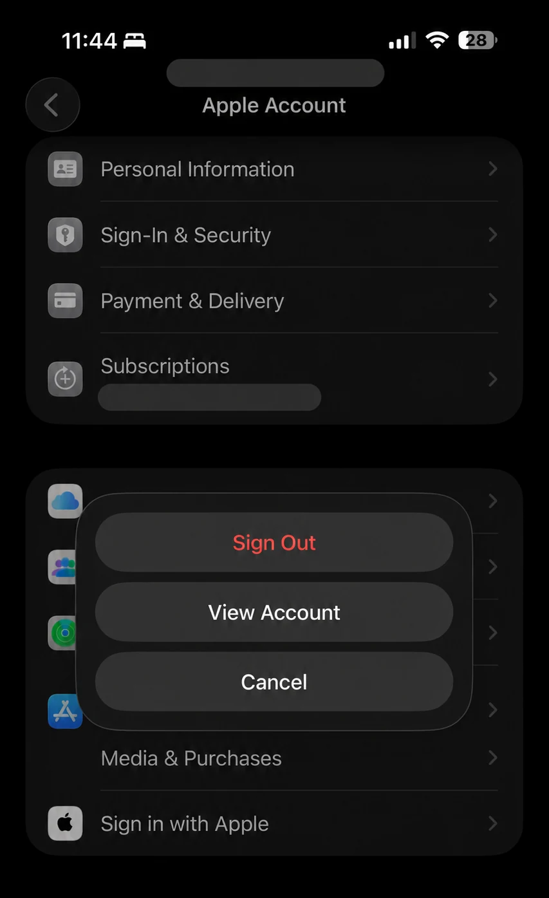
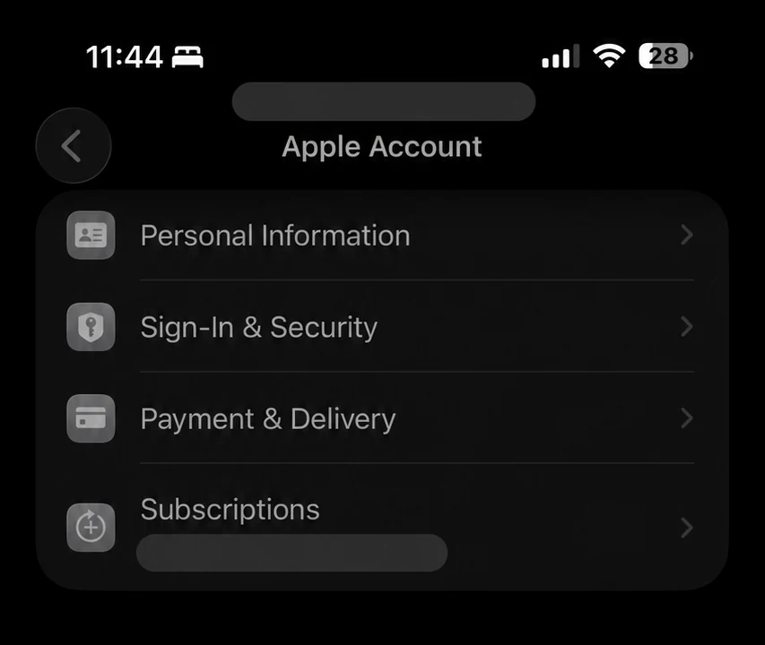
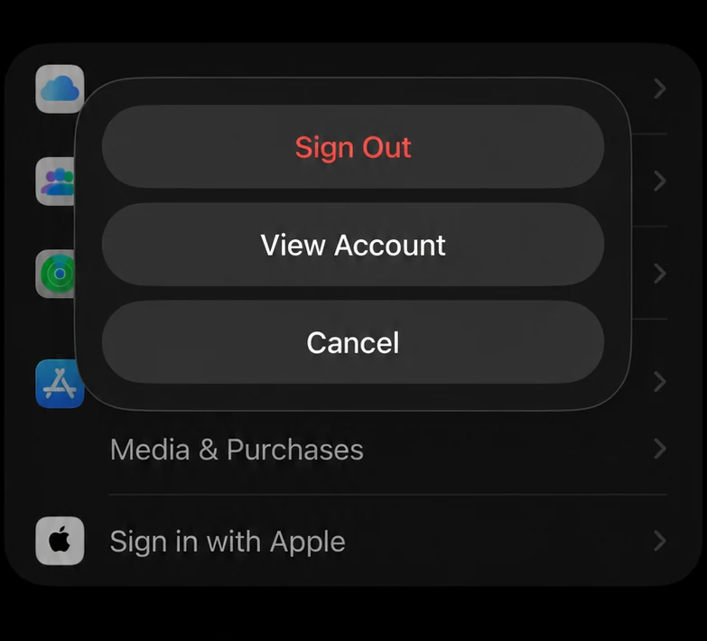

To sign out of the account used by the App Store, open Settings → [your name] → Media & Purchases → Sign Out, then confirm if asked. Use this route when the App Store profile screen does not show a Sign Out button. This guide covers iOS 26 and iOS 27 using Apple's current support instructions.
Settings → [your name] → Media & Purchases → Sign Out

Where is App Store Sign Out on iOS 26 and iOS 27?
Apple's current support instructions direct iPhone and iPad users to Settings → [your name] → Media & Purchases. This is the route to use when Sign Out is missing inside the App Store.
Inside the App Store
- Open App Store
- Tap your profile picture
- Scroll to the bottom
- Tap Sign Out
Availability varies by iOS version and account configuration. Use the Settings route if it is missing.
Through Settings
- Open Settings
- Tap your name
- Tap Media & Purchases
- Tap Sign Out
This matches Apple's current support guidance.
How to sign out of the App Store on iOS 26 and iOS 27
Open the Settings app
Look for the grey gear icon on your Home Screen or in App Library.
Tap your name or Apple Account banner
It appears at the top of Settings. This opens the Apple Account page.

Tap Media & Purchases
Scroll down the Apple Account page if needed. Do not tap the separate, full Apple Account sign-out control at the bottom of the page.
Tap Sign Out
A menu appears with Sign Out, View Account and Cancel. Choose Sign Out.
Confirm if prompted
Choose Confirm or Sign Out if prompted. Your App Store and media-purchase session will end.

Keep iCloud signed in when changing your App Store account
If you only want to change or refresh the account used by the App Store, sign out from the Media & Purchases menu. The separate Sign Out button at the bottom of the full Apple Account page affects iCloud and other Apple services and is not required for this task.
How to sign in again or use another Apple Account
Return to Settings → [your name] → Media & Purchases. To reconnect the same account, tap Continue. To use a different purchase account, choose the option labelled Not [your name]? when it appears and enter the other Apple Account details.
Only sign in to an account that belongs to you or that you are authorised to use. Apps, subscriptions and purchases remain associated with the Apple Account that originally acquired them.
What does signing out of Media & Purchases affect?
It changes your store session
The account used for the App Store and Apple media purchases is signed out.
It does not sign out of iCloud
Apple states that you do not need to sign out of iCloud or iMessage when changing Media & Purchases.
Downloaded media may be removed
Apple warns that signing in and out of Media & Purchases can remove downloaded content from Apple services.
Purchases stay linked to their account
An app or media purchase remains tied to the Apple Account that originally obtained it.
Can this help when the App Store keeps asking for a password?
Signing out and back in can refresh the Media & Purchases session, so it is a sensible troubleshooting step when the App Store repeatedly asks for a password. If the prompt returns for one particular app, that app may have been downloaded using a different Apple Account.
If the problem continues, restart the iPhone, install the latest iOS update available for your device, check your Apple Account payment information and contact Apple Support if the account cannot be verified.
What if Sign Out is unavailable or your account is greyed out?
Check whether Screen Time is restricting account changes. Apple's account restrictions guide explains the relevant controls. Menu names differ between releases: look under Content & Privacy Restrictions for account-change permissions, and follow the labels shown on your device.
If a parent or guardian manages the account, ask them to make the change. For a work or school device, ask the administrator. If you cannot verify the account or recover its credentials, use Apple's official support options.
Frequently asked questions
Where is the App Store Sign Out button on iOS 26 and iOS 27?
Open Settings, tap your name, choose Media & Purchases, then Sign Out. Confirm if prompted. Menu wording can vary by software version and account settings.
Do these instructions include iOS 27 screenshots?
No. The screenshots in this guide were captured on iOS 26. For iOS 27, follow the written Settings and Media & Purchases instructions, based on Apple's current support guidance; labels and layout may vary.
Does signing out of Media & Purchases sign me out of iCloud?
No. This changes the store and media-purchase session. It does not sign you out of iCloud or iMessage.
Will signing out delete my installed apps?
Signing out does not normally uninstall apps. Downloaded Apple media may be removed, and purchases remain associated with the account that acquired them.
Can I use a different Apple Account for App Store purchases?
Return to Media & Purchases after signing out. Choose the option to use another account, such as Not [your name]?, if shown. Existing purchases do not automatically transfer to the new account.
What should I check if my Apple Account is greyed out?
Screen Time restrictions may prevent account changes. Review the account-change settings if you manage the device. For a child account, ask the parent or guardian; for a managed device, contact its administrator.
Sources and verification
- Apple Support: Sign out of Media & Purchases
- Apple Support: Sign out and back in to Media & Purchases
- Apple Support: account changes blocked by Screen Time restrictions
Last checked: 11 November 2026. Apple can change menu names and locations between iOS releases, regions and account configurations.